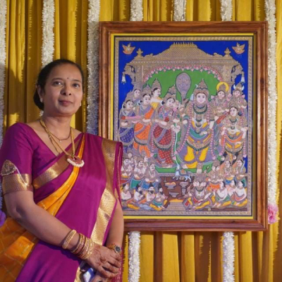

<div class="container pt-5">
  <div class="container-block">
    <h2 class="page-title bottom-line">Art and Painting</h2>
    <h5 class="page-title all-caps">Smt. Asha Prasad</h5>
    <div class="wrapper">
      <div class="img-wrapper">
        
      </div>
      <div>
        <p>
          Smt. Asha Prasad is our multi-faceted arts teacher. She did her
          Bachelor of Arts in 1993 and studied fashion design later on. She’s
          trained in various courses like Rajasthani Painting, Traditional
          Mysore Painting and Mural Paintings of Kerala.
        </p>
        <p>
          Smt. Prasad has learnt the rare and valued traditional painting at a
          very young age, so it was an easy decision for her to make it her
          profession. She has been doing so since 20 years with college
          students, working women, housewives and elderly ladies.
        </p>
        <p>
          For the past many years she has been taking drawing classes for kids,
          aging from preschool to high school and has the experience of teaching
          different age groups with appropriate methods. Over the years, with
          each new student, young or old, she has had to adapt various new
          creative teaching techniques, which in turn has made her classes
          interesting and productive.
        </p>
        <p>She has won numerous awards including:</p>

        <ul>
          <li>
            1993 – 1st Prize in Traditional Art – Mysore Dasara Exhibition
            Authority
          </li>
          <li>
            1993 – 1st Prize in Spot Painting Competition – Maharanis Arts
            College
          </li>
          <li>
            1992 – 1st Prize in Spot Painting Competition – Maharanis Arts
            College
          </li>
          <li>
            1991 – 1st Prize in Spot Painting Competition – Maharanis Arts
            College
          </li>
        </ul>
      </div>
    </div>
  </div>
</div>
